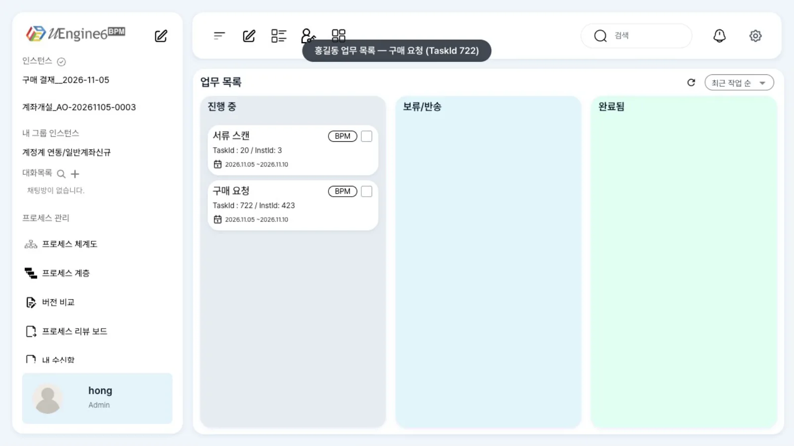
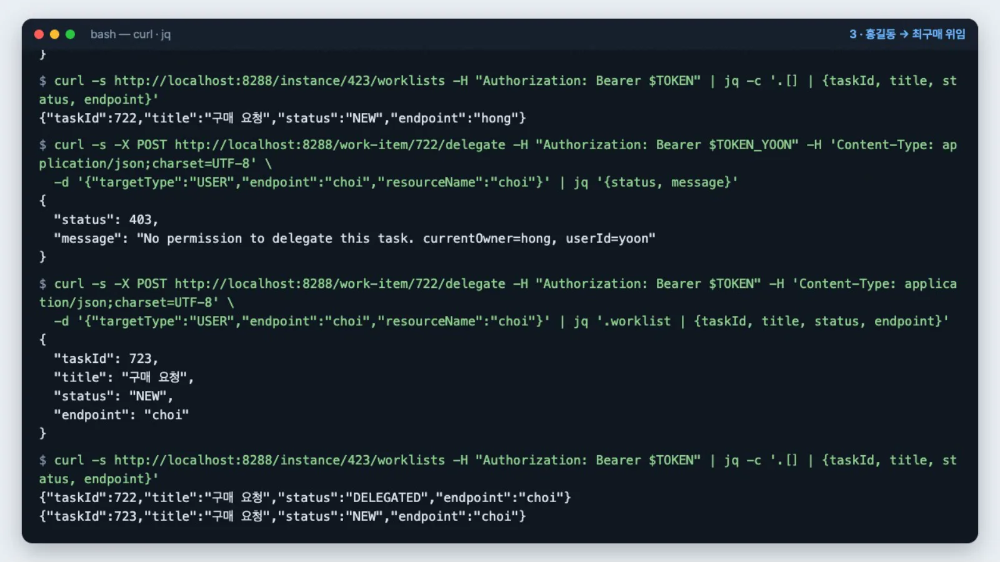
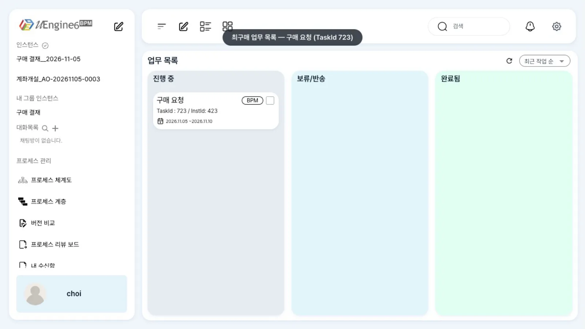

인스턴스 시작·업무 목록·작업 완료·위임·반송·변수·되돌리기를 HTTP로 호출하는 방법입니다. 표의 「확인」 칸에 ✅가 있는 호출은 이 튜토리얼의 스택에서 실제로 호출해 결과를 확인했습니다.
무엇을 · 왜#
uEngine6의 화면이 하는 일은 모두 REST API로도 할 수 있습니다. 다른 시스템에서 프로세스를 시작하거나 자체 화면에서 작업을 완료할 때, 운영 도구에서 인스턴스를 수정할 때 씁니다(Camunda의 REST API와 같은 역할을 합니다).
| 서비스 | 직접 주소 | 게이트웨이 경유 경로 | 하는 일 |
|---|---|---|---|
| process-service | :9294 |
/instance/**, /work-item/**, /worklist/**, /instances/**, /start-and-complete, /dry-run/**, /search/**, /iam/**, /notifications/** … |
인스턴스·작업·변수 |
| definition-service | :9293 |
/definition/**, /version/**, /versions/** |
정의 파일·잠금 |
인증#
- 토큰: Keycloak realm
uengine의 클라이언트uengine에서 비밀번호 방식(password grant)으로 받습니다. 요청마다Authorization: Bearer <access_token>을 붙입니다. - 게이트웨이(:8288)는 로그인 세션 쿠키가 없어도 Bearer만으로 인증할 수 있습니다. 토큰도 쿠키도 없으면
302로 Keycloak 로그인으로 이동합니다. - 사용자 ID =
preferred_username(hong,choi). process-service는 토큰의preferred_username→email→sub순으로 사용자를 정합니다(SecurityAwareServletFilter). 그래서roleMappings·위임의endpoint에는 이메일이 아니라 사용자 이름을 씁니다. - 권한: 작업을 바꾸는 API(완료·위임·반송·SKIP)는 「지금 그 작업의 담당자인가」를 확인합니다. 담당자가 아니면
403입니다. 인스턴스 시작은 역할이 없는 사용자(choi)로도 가능했습니다. 레인에 그룹·역할 규칙이 있으면 작업은 해당 그룹·역할의 사용자에게만 배정됩니다.
TOKEN=$(curl -s http://localhost:8280/realms/uengine/protocol/openid-connect/token \
-d client_id=uengine -d grant_type=password -d username=hong -d password=1234 | jq -r .access_token)
따라 하기 — 위임 API#
영상에서는 홍길동이 시작한 작업을 API로 최구매에게 넘깁니다. 화면에는 위임 버튼이 보이지 않아(이 브랜치의 결함) 위임은 API로만 합니다. 정의는 첫 프로세스의 「구매 요청 → 결재」 사본 튜토리얼/API/구매결재입니다.
- 홍길동이 시작합니다.
POST /instance로 시작하면 첫 작업 「구매 요청」이 홍길동에게 배정됩니다.GET /instance/<번호>/worklists로 해당 인스턴스의 작업을 확인합니다. 영상에서는 인스턴스 423, 작업 722(NEW,hong)였고, 홍길동의 업무 목록에도 「TaskId : 722」 카드가 있습니다.curl -s -X POST http://localhost:8288/instance -H "Authorization: Bearer $TOKEN" \ -H 'Content-Type: application/json;charset=UTF-8' \ -d '{"processDefinitionId":"튜토리얼/API/구매결재"}' | jq '{instanceId, name, status}' curl -s http://localhost:8288/instance/<번호>/worklists -H "Authorization: Bearer $TOKEN" \ | jq -c '.[] | {taskId, title, status, endpoint}'
터미널과 홍길동의 업무 목록 - 담당자가 아니면 위임할 수 없습니다. 윤팀장(
yoon)의 토큰으로 홍길동의 작업을 위임하면403과No permission to delegate this task. currentOwner=hong, userId=yoon이 반환됩니다. - 홍길동이 최구매에게 위임합니다. 본문
{"targetType":"USER","endpoint":"choi","resourceName":"choi"}로 호출하면 응답에 최구매에게 새로 배정된 작업(723,NEW)이 포함됩니다. 원래 작업 722는DELEGATED가 되고 담당자 칸도choi로 바뀝니다.curl -s -X POST http://localhost:8288/work-item/<작업 번호>/delegate -H "Authorization: Bearer $TOKEN" \ -H 'Content-Type: application/json;charset=UTF-8' \ -d '{"targetType":"USER","endpoint":"choi","resourceName":"choi"}' | jq '.worklist | {taskId, title, status, endpoint}'
위임 응답 - 업무 목록이 바뀝니다. 홍길동의 업무 목록에서 722 카드가 사라지고, 최구매의 업무 목록에 「구매 요청」이 723으로 나타납니다(
DELEGATED인 722는 화면에 보이지 않습니다). 업무 목록은 자동으로 갱신되지 않으므로 다시 열거나 새로고침 아이콘을 누릅니다.
최구매의 업무 목록
설정 레퍼런스#
표의 경로는 게이트웨이(http://localhost:8288) 기준입니다. 본문은 모두 Content-Type: application/json;charset=UTF-8입니다.
인스턴스#
| 메서드 · 경로 | 본문 | 응답 | 권한 | 확인 |
|---|---|---|---|---|
POST /instance |
ProcessExecutionCommand(아래) |
{name, instanceId, status:"Running", defVer, corrkey, _links} |
로그인 사용자 | ✅ |
GET /instance/{id} |
— | 같은 구조, status는 Running·Completed·Stopped … |
로그인 사용자 | ✅ |
GET /instance/{id}/worklists |
— | 해당 인스턴스(하위 포함)의 작업 배열 {taskId, title, status, endpoint, roleName, trcTag, defVerId, …} |
로그인 사용자 | ✅ |
GET /instance/{id}/variables |
— | 변수 맵. 프로세스 변수는 키가 :이름(예: ":메모"), :가 가운데 있는 키는 엔진 내부 값 |
로그인 사용자 | ✅ |
POST /instance/{id}/variable/{이름} |
JSON 값(문자열은 "급하게 필요합니다"처럼 따옴표) |
200, 빈 본문 |
로그인 사용자 | ✅ |
GET /instance/{id}/variable/{이름} |
— | 해당 값. 한글 값은 ???로 깨짐 → /variables를 쓰세요 |
로그인 사용자 | ✅(영문 이름·값만 정상) |
POST /instance/{id}/activity/{작업 ID}/backToHere |
— | 인스턴스. 해당 작업 이후가 COMPENSATED 상태가 되고 해당 작업이 새로 생성됨 |
로그인 사용자 | ✅ |
POST /instance/{id}/stop |
— | 인스턴스, status:"Stopped" |
로그인 사용자 | ✅ |
DELETE /instance/{id} |
— | 200. 인스턴스 행이 삭제됨 |
로그인 사용자 | ✅ |
POST /instance/{id}/suspend · /resume |
— | 200이지만 상태가 바뀌지 않음 |
— | ✅(효과 없음) |
GET /instance/{id}/audit |
— | [] (감사 기록이 꺼져 있음: uengine.audit.sink: none) |
— | ✅ |
GET /instances/search/findFilterICanSee?instId=&name=&status=&initEp=… |
— | 페이지(page.totalElements …). 관리자 화면 목록에서 사용함 |
로그인 사용자 | ✅ |
POST /start-and-complete |
{"processExecutionCommand": {…}, "workItem": {"parameterValues": {…}}}, 헤더 isSimulate: false 필수 |
인스턴스. 시작 + 첫 작업 완료(화면 「실행」 창) | 로그인 사용자 | 화면으로 ✅ |
POST /dry-run |
ProcessExecutionCommand |
첫 작업 미리보기. DB에 남지 않음(롤백) | 로그인 사용자 | 화면으로 ✅ |
ProcessExecutionCommand의 필드:
| 필드 | 뜻 |
|---|---|
processDefinitionId |
정의 아이디(경로, .bpmn 없이). archive/<아이디>.bpmn/에서 번호가 가장 큰 버전으로 시작합니다 |
roleMappings |
[{"name": "<레인 이름>", "endpoints": ["<사용자 이름>"], "resourceNames": ["<표시 이름>"], "groupName", "scope"}]. 비우면 레인 규칙대로, 규칙이 없으면 시작한 사람 |
processVariableValues |
[{"name": "<변수>", "values": [<값>]}] — 변수 초깃값(이 튜토리얼에서는 확인하지 못함) |
correlationKeyValue |
상관 키. 응답의 corrkey는 null로 오지만 GET /work-item?corrKey=로 찾을 수 있습니다 |
instanceName, simulation, group, definitionXml, startEventPayload |
이름(현재 무시되며 정의 이름·패턴을 사용함), 시뮬레이션, 그룹 역할 매핑, 파일 대신 XML, 시작 이벤트 값 |
작업#
| 메서드 · 경로 | 본문 | 응답 | 권한 | 확인 |
|---|---|---|---|---|
GET /worklist/search/findToDo |
— | HAL _embedded.worklist[]. 작업 번호는 _links.self.href의 끝(본문에 taskId 없음). COMPLETED가 아닌 내 작업 + 내 그룹의 선점 대기 작업 |
로그인 사용자 | ✅ |
GET /work-item/{taskId} |
— | {worklist, activity, parameterValues, execScope, desiredState} |
로그인 사용자 | ✅ |
GET /work-item?corrKey={키} |
— | 상관 키가 같은 실행 중 인스턴스의 현재 작업 배열 | 로그인 사용자 | ✅ |
POST /work-item/{taskId}/complete |
{"parameterValues": {"<아규먼트>": 값}} |
200, 빈 본문 |
담당자 본인. 아니면 403 Only the current work item owner can complete this task, 담당자가 없으면 409 Work item must be claimed before completion |
✅ |
POST /work-item/{taskId}/delegate[?delegateOnlyForWorkitem=false] |
{"targetType": "USER", "endpoint": "<사용자>", "resourceName": "<표시 이름>"} (그 밖에 GROUP+groupName, ROLE+scope, GROUP_ROLE) |
새 작업의 WorkItemResource. 원래 작업은 DELEGATED |
담당자 본인. 아니면 403 No permission to delegate this task |
✅ |
POST /work-item/{taskId}/claim |
{"endpoint": "<사용자>"} (비우면 선점 해제) |
200 |
해제는 본인 것만 | — |
POST /instance/multi-claim |
ESB 봉투 {"header": {"emnb", "belnOrgnCode"}, "payload": {"dvsnVal": "0", "bswrList": [{"fncgBpmTaskLstId", "fncgBpmPcesIntcId"}]}} |
봉투 | 그룹 구성원(esb.inbound-unwrap.enabled: true 필요) |
화면으로 ✅ (업무 목록) |
GET /work-item/{taskId}/return/availability |
— | {enabled, reason, candidates[{taskId, tracingTag, activityName, endpoint}]} |
— | ✅ |
POST /work-item/{taskId}/return |
{"tracingTag": "<되돌아갈 작업 ID>"} 또는 {"taskId": <번호>}, 선택 reason·execScope |
{instanceId, rootInstId, targetTracingTag, currentTaskIds} |
담당자 본인 | ✅ |
GET /work-item/{taskId}/skip/availability |
— | {enabled, reason} |
— | ✅ |
POST /work-item/{taskId}/skip |
{} 또는 {"reason": "…"} |
{instanceId, rootInstId, skippedTracingTag, currentTaskIds} |
담당자 본인 | ✅ |
POST /work-item/{taskId}/reassignment |
{"endpoint": "<사용자>"} |
WorkItemResource |
— | — |
정의#
| 메서드 · 경로 | 본문 | 응답 | 확인 |
|---|---|---|---|
GET /definition/ · GET /definition/{폴더} |
— | HAL _embedded.definitions[](name, directory, path) |
✅ |
GET /definition/raw?defPath=<경로>.bpmn |
— | BPMN XML 그대로 | ✅ |
GET /definition/raw/<경로>.bpmn |
— | 경로에 한글이 있으면 500(인코딩된 경로 그대로 파일을 찾음) → 위의 ?defPath=를 쓰세요 |
✅(한글 경로 ✗) |
PUT /definition/raw?defPath=<경로>.bpmn |
{"definition": "<XML>", "name": "<이름>", "version": "0.1"} |
정의 정보. 모델러의 「저장」에서 사용함 | 화면으로 ✅ |
GET /definition/lock?path=<경로>.bpmn · DELETE … |
— | 편집 잠금 조회·해제 | ✅ |
GET /versions |
— | 500 Range [10, 9) out of bounds |
✅(✗) |
GET /versions/<경로>.bpmn |
— | { } (archive에 버전이 있어도 빈 목록) |
✅(✗) |
POST :9294/definition-changes (process-service 직접) |
본문(text/plain) <경로>.bpmn |
정의 파일을 변경한 뒤 엔진에 알림(이벤트 매핑 다시 읽기) | ✅ |
변수 읽기·쓰기 예#
# 쓰기: 값은 JSON 으로 해석됩니다. 문자열은 따옴표까지 보냅니다.
curl -s -X POST http://localhost:8288/instance/317/variable/%EB%A9%94%EB%AA%A8 \
-H "Authorization: Bearer $TOKEN" -H 'Content-Type: application/json;charset=UTF-8' -d '"급하게 필요합니다"'
# 읽기: 한글 이름·값은 /variables 로. 프로세스 변수는 키 앞에 ':' 가 붙습니다.
curl -s http://localhost:8288/instance/317/variables -H "Authorization: Bearer $TOKEN" \
| jq '{memo: .[":memo"], 메모: .[":메모"]}'
확인한 결과(인스턴스 317): {":memo": "urgent", ":메모": "급하게 필요합니다"}. 같은 값을 GET /instance/317/variable/메모로 읽으면 ??? ?????가 반환됩니다. 영문 이름 memo는 단건으로도 urgent가 반환됩니다.
작업을 완료하며 보낸 parameterValues(아규먼트 값)는 매핑하지 않으면 프로세스 변수가 되지 않습니다. 프로세스 변수에 값을 넣으려면 작업 입력값과 데이터 매핑을 보세요.
되돌리기(backToHere) 예#
curl -s -X POST http://localhost:8288/instance/317/activity/UserTask_1/backToHere -H "Authorization: Bearer $TOKEN"
확인한 결과: 완료된 「구매 요청」(515)과 진행 중이던 「결재」(516)가 COMPENSATED가 되고, 「구매 요청」이 새 작업(517)으로 다시 생성되었습니다. 화면에서 되돌리는 방법은 되돌리기와 실패한 작업 다루기에 있습니다.
알려진 제약#
| 증상 | 우회 |
|---|---|
| 작업 화면에 위임 버튼이 보이지 않음 | POST /work-item/{taskId}/delegate를 씁니다 |
다중 위임 POST /work-items/delegate가 웹 화면 HTML을 반환함(게이트웨이 라우트 없음) |
단건 위임을 여러 번 호출합니다 |
위임받은 사람의 findToDo 응답에 새 작업(NEW)과 원래 작업(DELEGATED)이 함께 나옴(업무 목록 화면에는 NEW만 보임) |
API로 작업을 고를 때는 status가 NEW인 것을 씁니다 |
GET /instance/{id}/variable/{한글}이 ??? |
GET /instance/{id}/variables |
suspend·resume이 200인데 상태가 그대로 |
이 브랜치에서는 쓰지 않습니다 |
GET /versions 500, GET /versions/<경로> 빈 목록 |
버전은 archive/ 폴더에서 확인합니다 — 버전과 배포 |
GET /instance/{id}/audit이 [] |
감사 기록 저장이 꺼져 있습니다(uengine.audit.sink: none) |
반송·SKIP 사유(reason)를 넣으면 그 사람의 findToDo가 500 Unable to access lob stream이 될 수 있음 |
사유 없이 호출하거나, 반송과 SKIP의 주의를 따르세요 |
실시간 알림 /events/stream이 404(Kafka 모드) |
목록을 다시 조회합니다 |
확인 문제#
`roleMappings`의 `endpoints`에 `hong@uengine.org`를 넣으면 어떻게 되나요?
인스턴스는 생성되지만 작업 담당자가 hong@uengine.org가 됩니다. 이 브랜치의 사용자 ID는 preferred_username(hong)이라 해당 작업은 누구의 업무 목록에도 나타나지 않고, 완료하려 하면 403입니다. 사용자 이름을 넣습니다.
윤팀장이 홍길동의 작업을 위임하려고 하면 무엇이 돌아오나요?
403 No permission to delegate this task. currentOwner=hong, userId=yoon입니다. 완료·위임·반송·SKIP은 해당 작업의 담당자 본인만 할 수 있습니다.
한글 이름의 변수 값을 읽으려면 어느 API를 쓰나요?
GET /instance/{id}/variables입니다. 키가 :메모처럼 앞에 :가 붙어 반환됩니다. 단건 GET /instance/{id}/variable/메모는 글자가 깨집니다.